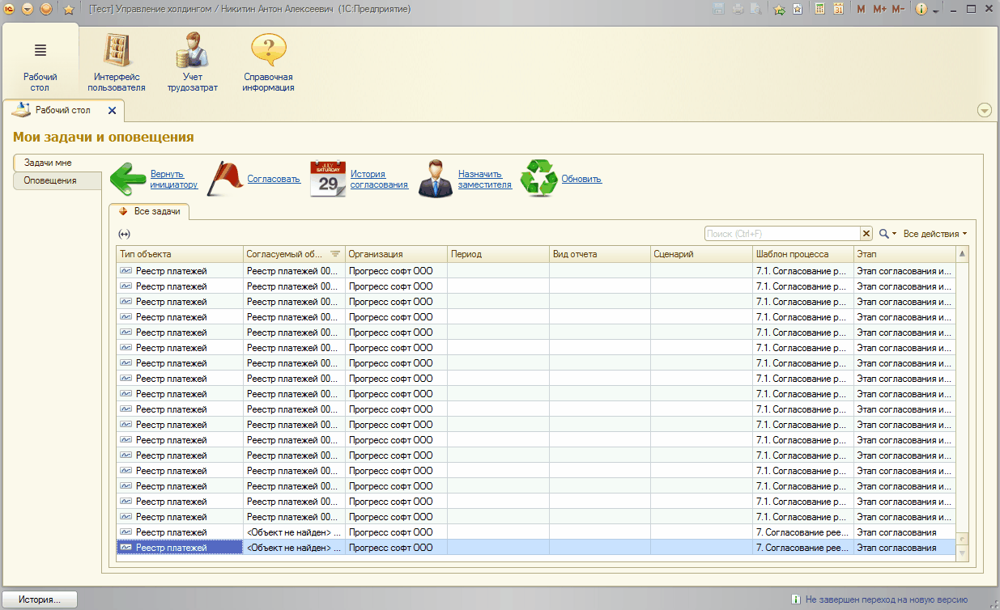
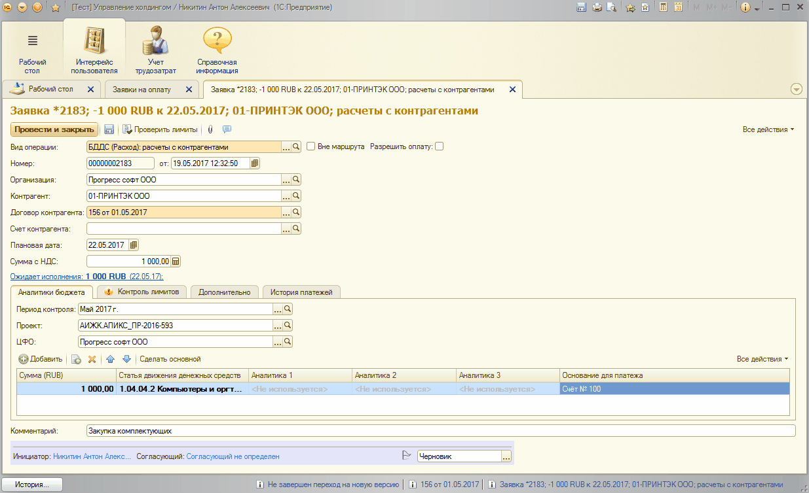
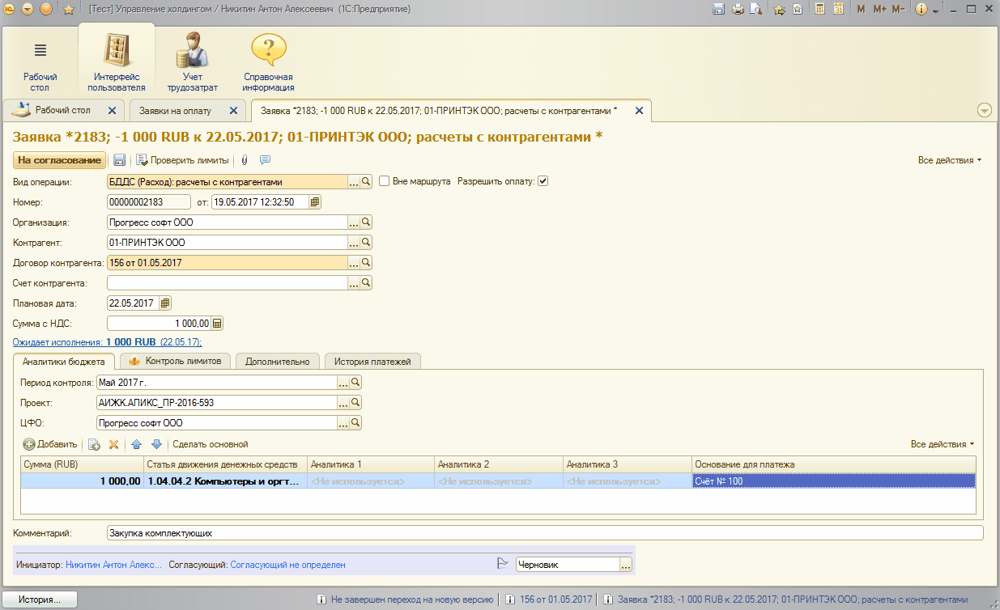

Для планирования расхода/приход денежных средств создается документ «Заявка на операцию».
Для этого в системе «1С:Управление холдингом», на закладке «Интерфейс пользователя» нужно выбрать пункт «Заявки на платёж».
В открывшемся списке документов нужно нажать на кнопку «Приход» или «Расход»
На форме документа «Заявка на платёж» обязательно нужно заполнить значения следующих полей:
Внизу, в табличной части, на закладке «Аналитики бюджета» нужно указать статью движения денежных средств.
Если планируется платеж по нескольким статьям ДДС в табличной части «Аналитики бюджета» можно указать несколько статей ДДС, указав для каждой статьи нужную сумму планируемого платежа.
Следующие поля документа «Заявка на операцию» заполняются при наличии информации:
Для согласования заявки на оплату к ней необходимо прикрепить файл с основанием оплаты в различных форматов (Word, Excel, Adobe Acrobat Reader и т.д.). Для этого необходимо сохранить заявку на оплату, а затем нажать на кнопку "Прикрепить файл" и в открывшемся окне выбрать пункт меню "Добавить - Из файла на диске".
Так же к заявке на операцию есть возможность добавить комментарий. Для этого необходимо нажать на кнопку "Добавить комментарий" и в открывшемся окне заполнить поле комментария. Так же в этом окне можно прикрепить файл в различных форматах, нажав на соответствующую ссылку:
